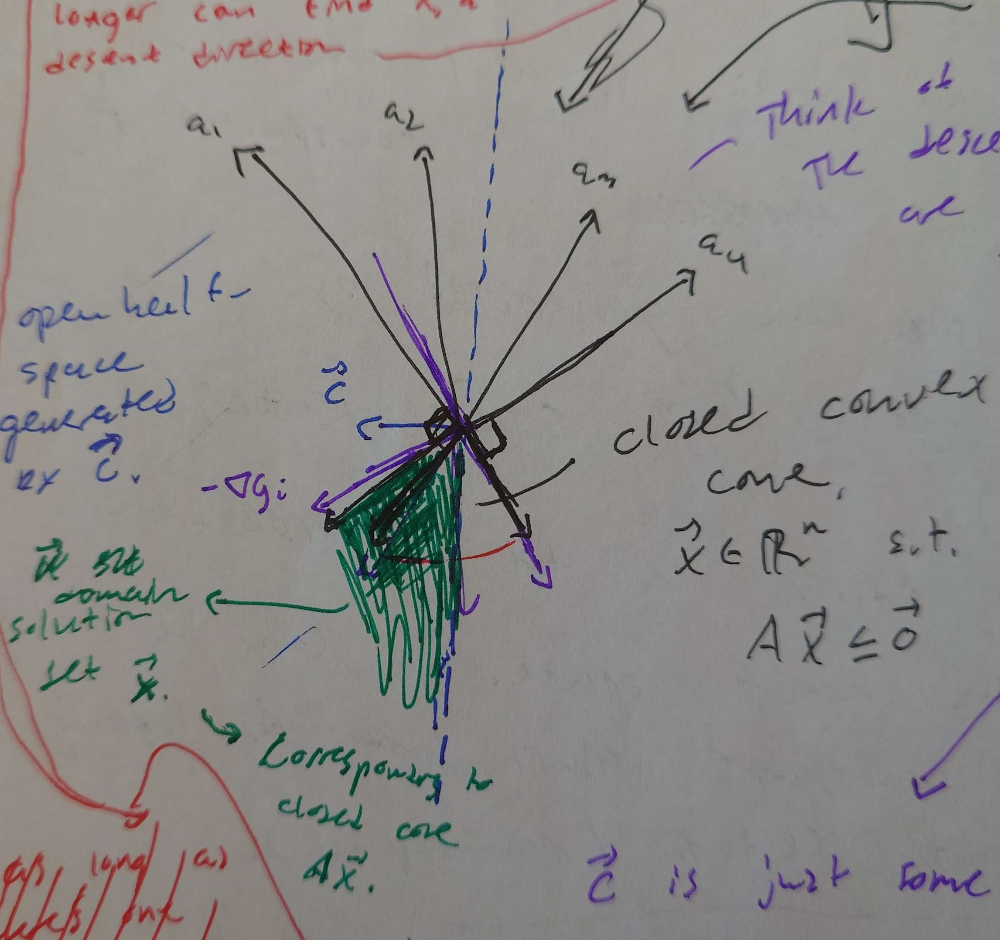
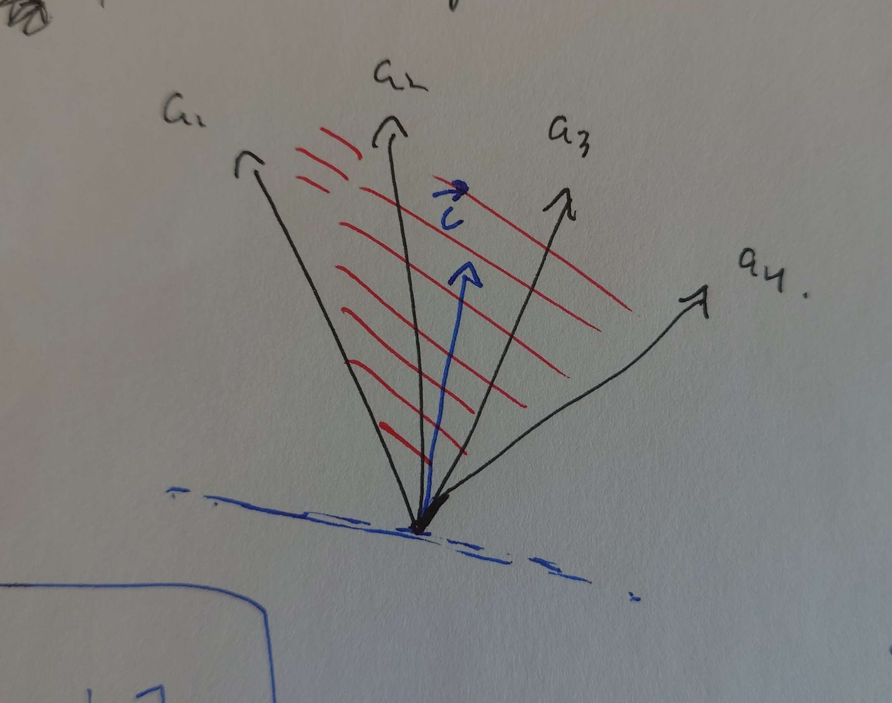

Above: Me, after realizing what Gordan's Theorem actually does years after my Intro Optimization class, circa 2024
Draft 1: 6/11/24
Recommended Background:
Linear Algebra: column/row space, linear independence, geoemetric
intuition; Multivariable Calculus: gradients and lagrange multipliers;
Optimization Theory: Lagrangian, dualization
Key Takeaways:
The simple geometric interpretation of Farka’s/Gordan’s Theorem, in the
context of KKT Conditions.
Quick Intro:
When I was first learning optimization theory, I never really understood
how Farka’s Theorem worked. Some intuition can be derived from the
proof, but even then, I was lost whenever it was applied throughout that
semester. Only until I started self-studying and saw it applied was when
I realized how simple it was! Of course, this is assuming you have a
strong geometric understanding of linear algebra (This was a very common
theme in my multiple exposures to linear algebra – geometric
interpretation preceded true understanding and motivation).
Motivation & Uses:
Farka’s/Gordan’s theorem is used extensively to derive and prove
optimality conditions, such as the KKT conditions. Also it’s pretty cool
since it’s an either/or type of theorem (one or the other is always
true).
Farka’s Theorem:
Let \({\mathbf{A}}\in \mathbb{R}^{(m+1)\times
d}\), and \({\mathbf{c}}\in
\mathbb{R}^d\). Then exactly one of the following two systems has
a solution: \[\begin{aligned}
\mbox{\textbf{\textit{System 1: }}}& {\mathbf{A}}{\mathbf{x}}\leq
\mathbf{0}\mbox{ and } {\mathbf{c}}^\top{\mathbf{x}}> 0 \mbox{ for
some } {\mathbf{x}}\in \mathbb{R}^d.\\
\mbox{\textbf{\textit{System 2: }}}& {\mathbf{A}}^\top{\mathbf{y}}=
{\mathbf{c}}\mbox{ and } {\mathbf{y}}\geq 0 \mbox{ for some }
{\mathbf{y}}\in \mathbb{R}^{(m+1)}.
\end{aligned}\]
Setting \({\mathbf{c}}= \mathbf{0}\)
and moving the equality constraint, we get Gordan’s theorem:
Corollary: Gordan’s Theorem:
Let \({\mathbf{A}}\in \mathbb{R}^{(m+1)\times
d}\), and \({\mathbf{c}}\in
\mathbb{R}^d\). Then exactly one of the following two systems has
a solution: \[\begin{aligned}
\mbox{\textbf{\textit{System 1: }}}& {\mathbf{A}}{\mathbf{x}}<
\mathbf{0}\mbox{ for some } {\mathbf{x}}\in \mathbb{R}^d.\\
\mbox{\textbf{\textit{System 2: }}}& {\mathbf{A}}^\top{\mathbf{y}}=
\mathbf{0}, {\mathbf{y}}\geq 0 \mbox{ for some } {\mathbf{y}}\in
\mathbb{R}^{(m+1)}.
\end{aligned}\]
This is modified out of Bazaraa, Sherali, and Shetty’s Nonlinear Programming.
Now, without any context, one might wonder why would anyone have
decided that this was something needed abstractly? There are an infinite
amount of proofs one can likely construct with respect to how various
systems interact, but this one was proven.
Reasoning the behavior of the systems thinking about column and row
spaces is a start, but the problem (along with the understanding of KKT
conditions) becomes incredibly clear when we think about it in terms of
gradients of an objective function, and constraints.
It’ll also become clear as to why I defined the dimensions as \((m+1)\) and \(d\).
Let’s declare our standard optimization problems.
The Primal Problem P:
First, here’s the primal problem, which is just a fancy way to say the
original constrained optimization problem \(P\).
\[\begin{aligned}
&\mathop{\mathrm{minimize}}_{{\mathbf{x}}\in \mathbb{R}^d}
f({\mathbf{x}})\\
&\mbox{ s.t. }{\mathbf{A}}{\mathbf{x}}\leq {\mathbf{b}}, \mbox{
where } {\mathbf{A}}\in \mathbb{R}^{m\times d}, {\mathbf{b}}\in
\mathbb{R}^m
\end{aligned}\] In case you’re not familiar with how an
optimization problem is written in standard notation, basically we want
to minimize some function \(f\) of
\({\mathbf{x}}\), subject to \(m\) inequality or equality constraints (we
can always write inequality constraints to be less than some constant,
\(x>0 \implies -x \leq 0\), and also
write equality constraints as 2 separate inequality constraints, \(x=0 \Leftrightarrow x \leq 0 \mbox{ and } -x \leq
0\)).
Karush-Kuhn-Tucker (KKT) Points:
Now it turns out, a necessary condition of a solution to the primal
problem \(P\) is that it must be a KKT
point. The KKT conditions define what’s considered a KKT point, via the
following:
\(\bar{{\mathbf{x}}}\) is a KKT Point
if:
\[\begin{aligned}
&1.) \mbox{ Primal Feasibility (PF): } \bar{{\mathbf{x}}} \mbox{ is
a solution to } P.\\
&\mbox{There exists } {\boldsymbol{\lambda}}\geq 0 \mbox{ s.t. }\\
&2.) \mbox{ Dual Feasibility (DF): } \nabla f({\mathbf{x}}) +
{\boldsymbol{\lambda}}^\top\nabla {\mathbf{g}}({\mathbf{x}}) = 0\\
&3.) \mbox{ Complementary Slackness (CS): }
{\boldsymbol{\lambda}}^\top{\mathbf{g}}({\mathbf{x}}) = 0
\end{aligned}\]
Where \({\mathbf{g}}({\mathbf{x}}) =
{\mathbf{A}}{\mathbf{x}}- {\mathbf{b}}\), so \({\mathbf{g}}({\mathbf{x}}) \leq 0\).
Why does a solution have to be a KKT point? This is where Gordan’s
Theorem comes into play. Let’s define the variables as follows:
\[{\mathbf{A}}=
\begin{bmatrix}
\rule[.5ex]{2.5ex}{0.5pt}&\nabla
f({\mathbf{x}})^\top&\rule[.5ex]{2.5ex}{0.5pt}\\
\rule[.5ex]{2.5ex}{0.5pt}&\nabla
g_1({\mathbf{x}})^\top&\rule[.5ex]{2.5ex}{0.5pt}\\
& \vdots & \\
\rule[.5ex]{2.5ex}{0.5pt}&\nabla
g_m({\mathbf{x}})^\top&\rule[.5ex]{2.5ex}{0.5pt}\\
\end{bmatrix}, \quad {\mathbf{y}}= {\boldsymbol{\lambda}}\]
Where \({\mathbf{x}}\) is in the negative half-space of the direction of the gradient, i.e., \({\mathbf{x}}\in \{{\mathbf{d}}\in \mathbb{R}^d \mid {\mathbf{d}}^\top\nabla f({\mathbf{x}}) < 0\}\). We can just consider this a descent direction with some scalar \(\alpha > 0\). Note the dimensions of \({\mathbf{A}}\)!
If System 1 is true, \({\mathbf{A}}{\mathbf{x}}< \mathbf{0}\) states that there exists some descent direction \({\mathbf{x}}\) that lies in the direction of the negative closed cone of the gradient vectors. That is, there exists a descent direction (both feasible and decreasing) \({\mathbf{x}}\) such that \(\nabla f({\mathbf{x}})^\top{\mathbf{x}}< 0\), and \(\nabla g_i({\mathbf{x}})^\top{\mathbf{x}}< 0\) for all \(i\), which means we’re not at an optimal point!
Intuitively, we’re projecting \({\mathbf{x}}\) onto the gradient vectors. If there exists a \({\mathbf{x}}\) that results in only negative projections, we can further decrease the objective value. To be a descent direction, we obviously want \(\nabla f({\mathbf{x}})^\top{\mathbf{x}}< 0\), and to be a feasible direction, we want that \({\mathbf{g}}({\mathbf{x}}) \leq \mathbf{0}\), so we also want to move in the negative gradient for the constraints. Eventually, either \(g_i({\mathbf{x}})\) will be unconstrained in the direction of \(-\nabla f({\mathbf{x}})\) (so \(g_i({\mathbf{x}}) \rightarrow -\infty\) until the optimal \(f\) is met), or will be constrained in the direction of the negative gradient such that we can’t go any further, so \(g_j({\mathbf{x}}) = 0\), which we call a tight or binding constraint.
The geometry of system 2 accurately reflects the intuition at the optimum. Eventually, we’ll reach a point where \({\mathbf{A}}^\top{\boldsymbol{\lambda}}= 0\) with \({\mathbf{y}}\geq 0\). That is, \(\nabla f({\mathbf{x}})\) is non-negatively linearly dependent to the vectors \(\nabla g_i({\mathbf{x}})\) (non-negatively meaning that \(\nabla f({\mathbf{x}})\) lies in the non-negative cone spanned by \(\nabla g_i({\mathbf{x}})\) for binding constraints \(i\)). We required \({\boldsymbol{\lambda}}\geq \mathbf{0}\) as a part of how we defined our constraints \({\mathbf{g}}({\mathbf{x}})\).
Notice that \({\mathbf{A}}{\mathbf{x}}\neq 0\), which means \({\mathbf{x}}\) corresponds to the feasible descent space being an interior point.
Farka’s Theorem ends up being a generalization, where instead of
\({\mathbf{c}}= \mathbf{0}\), the
half-space generated by \({\mathbf{c}}\) is partially contained in
the non-negative cone spanned by the rows of \({\mathbf{A}}\).
Enjoy my horrible sketches :’)

System 1, Above: \(\mathbf{a}_i\) corresponds to gradient vectors. In green is the feasible space \(\mathbf{x}_i\), where the half-space of \(\mathbf{c}\) lies in the non-positive linear combination of the \(\mathbf{a}_i\).
System 2, Above: \(\mathbf{a}_i\) corresponds to gradient vectors. \(\mathbf{c}\) lies in the non-negative linear combination (non-negatively linearly dependent) of the \(\mathbf{a}_i\).
Duality:
It turns out there’s a flipped perspective of the primal problem \(P\), called the dual problem \(D\).
The dual problem \(D\) relaxes the
constraints on the primal problem \(P\)
by adding lagrange multipliers to the constraints which act as penalty
parameters, alongside some modified constraints.
The standard form of the dual writes the constraints as the following,
\({\mathbf{g}}({\mathbf{x}}) =
{\mathbf{A}}{\mathbf{x}}- {\mathbf{b}}\), so \({\mathbf{g}}({\mathbf{x}}) \leq 0\). Our
problem then becomes:
\[\begin{aligned}
&\mathop{\mathrm{maximize}}_{{\boldsymbol{\lambda}}\in \mathbb{R}^m}
\inf_{{\mathbf{x}}\in \mathbb{R}^n} \{f({\mathbf{x}}) +
{\boldsymbol{\lambda}}^\top{\mathbf{g}}({\mathbf{x}}) \}\\
&\mbox{ s.t. }{\boldsymbol{\lambda}}\geq 0\\
& {\mathbf{g}}({\mathbf{x}}) \leq 0\\
\end{aligned}\]
More on duality soon! There are some pretty cool ties between the
primal and dual, and depending on convexity, can help us find the
others’ optimal solution.